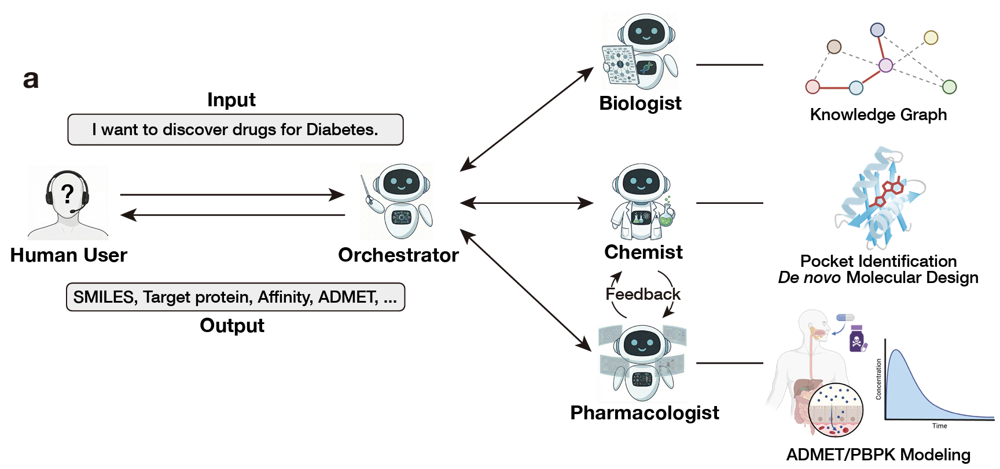

Democratizing Drug Discovery with an Orchestrated, Knowledge-Driven Multi-Agent Team for User-Guided Therapeutic Design
糖尿病に関わるHNF1Bを標的とした計算実験では、薬物動態の予測をもとにAIが分子を設計し直しました。その候補は、構造をランダムに変えた候補よりも、経口投与後に血中に届く割合が高いと予測されました。
有望な標的が見つかっても、そこに合う分子が体内で薬として使えるとは限りません。共同開発したOrchestRAでは、研究者が選んだ標的に対して、化学を担うAIが候補分子を設計します。薬理を担うAIがその吸収や体内分布を予測し、見つかった課題を化学側に返すことで、次に試す構造を練り直せます。